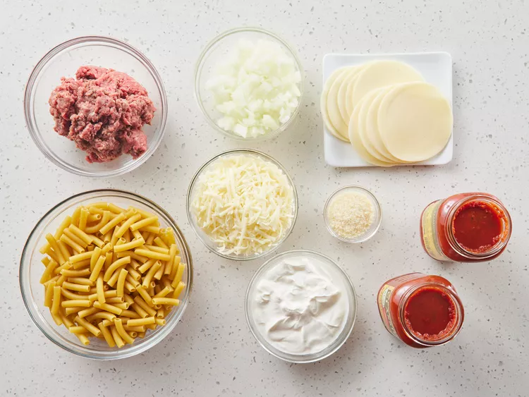
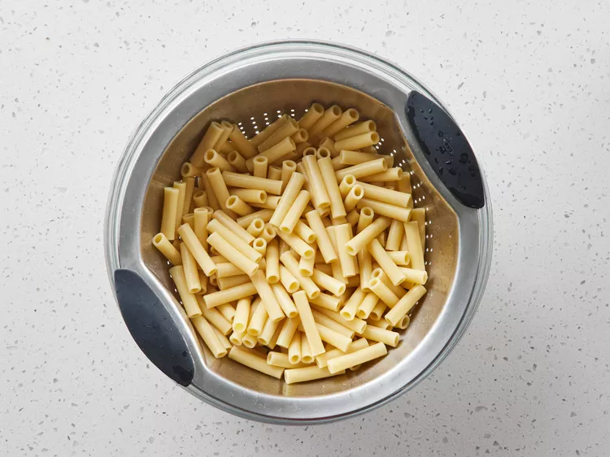
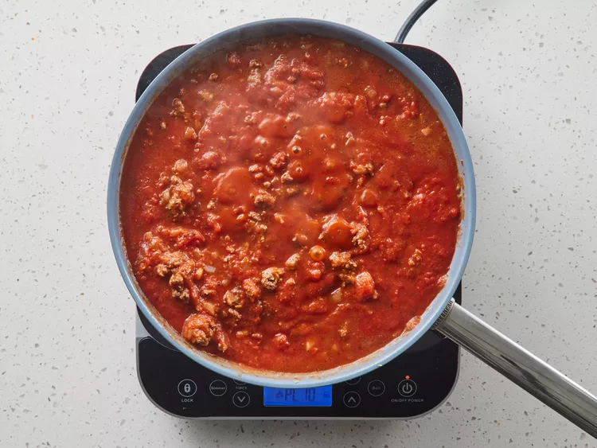
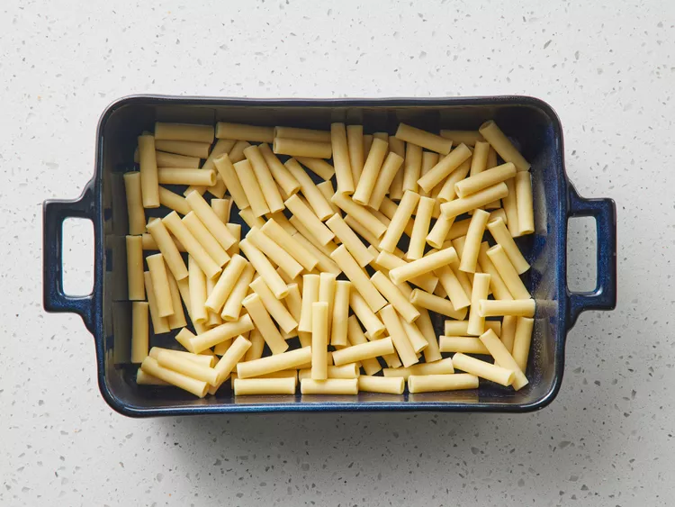
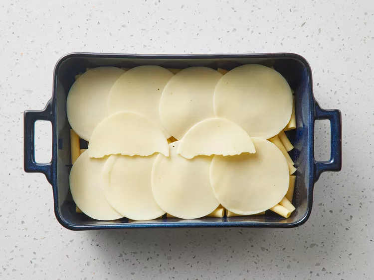
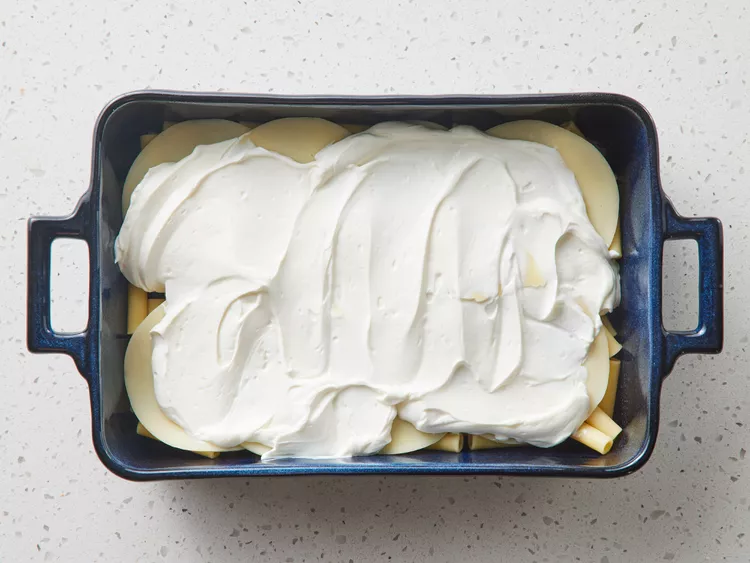
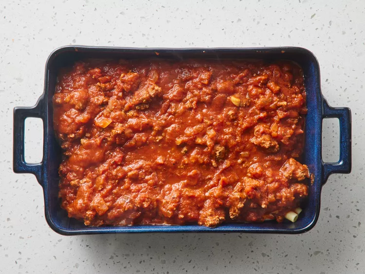

Baked Zitti

DESCRIPTION
Bake zitti is a deliciouse and nutritouse meal which can be served at dinners and parties
INGREDIENTS
- 1 pound dry ziti pasta
- onion, chopped
- 1 pound lean ground beef
- 2 (26 ounce) jars spaghetti sauce
- 6 ounces provolone cheese, sliced
- 1 ½ cups sour cream
- 6 ounces mozzarella cheese, shredded
- 2 tablespoons grated Parmesan cheese
STEPS
- Gather all ingredients.

- Bring a large pot of lightly salted water to a boil. Add ziti pasta, and cook
until al dente, about 8 minutes; drain.

- Meanwhile, brown ground beef and onion in a large skillet over medium
heat; stir
in spaghetti sauce and simmer for 15 minutes. Preheat the oven
to 350 degrees F (175
degrees C). Butter a 9x13-inch baking dish.

- Spread 1/2 of the ziti in the bottom of the prepared dish.

- Top with Provolone cheese.

- Top with sour cream.

- Add 1/2 of the meat sauce, remaining ziti, mozzarella cheese, and
remaining meat sauce. Top with grated Parmesan cheese.

- Bake in the preheated oven until heated through and cheeses have melted,
about 30 minutes.